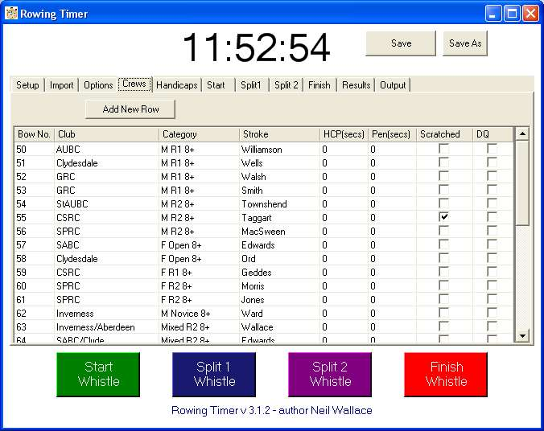

Crew Tab
This very important tab is where you load up the data for your crews.
This is either done
-
Manually (Click "Add Row" and get typing!) or
- or from Disk (Comma Separated files generated by Excel)
- or from rowtimer files (which have the extension *.rot)
There are some rules though.
Bow Numbers must be positive integers (1 - 1000) with no duplicates .
When entering "Club" and "Category" be wary that for sorting the results case and spacing are important.
For example "M NOVICE 8+", "M Novice 8+", "M Nov 8+", "MNov 8+" are all different!
Handicaps and Penaltied are values in 'seconds'. A handicap of 1 minute and 9 seconds should be added as 69.
Also use this tab (at any time) to remove crews who don't start the race and for any disqualifications.
